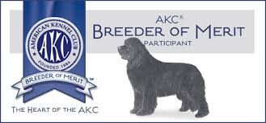
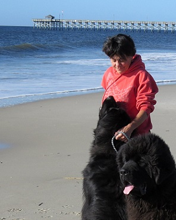
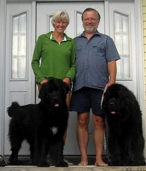

Kathy Hamilton bred her first Newfoundland litter in 1988 under the Old Bay prefix. Her first Newfs came from Phyllis and Jamie Welch (Spillway) and Brenda and Rick Santiago (Muddy Creek).
Cindy purchased her first Newf BETTY in 1992 and quickly became enamored with Newfoundlands. Mentored by members of Colonial Newfoundland Club, Kathy and Mike Paxton (Bear's Den), Karen and Gene Perry (Olde Mill) and Kathy Hamilton (Old Bay) she quickly jumped into learning about the breed and was soon participating in working events and volunteering for the club.
Fast forward to 1998, the year John and Cindy brought two more Newfs into their lives, YOGI from Jean and Steve McAdams (Shadrack) and DAISY from Deb Wigal (Top Shelf). In 2002 Cindy and John co-bred a litter with Deb Wigal. Kathy Hamilton helped whelp the litter and in return she was given ROCKY, a great-grandson of a dog she had bred in 1993. Almost all current Old Bay Newfs can trace their pedigree back to BACARDI - VN CH Old Bays Bacardi Of Top Shelf CDX, TDD, WRD owned by Deb Wigal and bred by Kathy Hamilton.
Old Bay has a long history of breeding health tested dogs. In 2020 you will find almost 100 Old Bay Newfs in the Orthopedic Foundation for Animals web site.
Old Bay is extremely proud of the achievements of the dogs they own and the owners of dogs they bred or co-bred. Here are some statistics:


